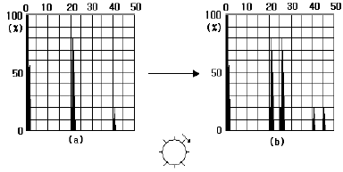
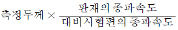
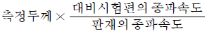
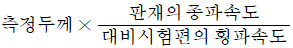
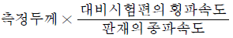
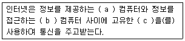

초음파비파괴검사기사(구) (2005-08-07 기출문제)
1과목: 초음파탐상시험원리
1. 거리진폭특성곡선을 사용할 때 주의해야 할 사항이 아닌 것은?
- 에코 높이 구분선의 변경과 탐상감도의 관계를 알아둔다.
- 굴절각도의 구분없이 동일한 거리진폭 특성곡선을 이용해야 한다.
- 측정범위가 다른 거리진폭특성곡선을 사용하지 말아야 한다.
- 거리진폭특성곡선 작성에 사용된 탐촉자를 사용한다.
(정답률: 알수없음)

2. 크기가 1/2×1인치인 장방형 크리스탈을 가진 탐촉자를 사용하여 알루미늄 시험체를 횡파로 탐상하고자 할 때 초음파의 분산 모양은 프라운호퍼(Fraunhofer)회절법칙을 이용하여 설명 될 수 있다. 이 때 크리스탈의 1/2 인치 편에서 초음파가 분산되는 각도는 얼마인가?(단, 사용한 탐촉자의 주파수는 5MHz 이며 알루미늄 시험체내의 횡파속도는 3.1×105㎝/s이다)
- 1.8°
- 3.4°
- 4.3°
- 5.2°
(정답률: 알수없음)
3. 제품 제작 중 용접부의 비파괴검사는 어느 때 실시하는 것이 가장 이상적인가?
- 열처리하기 전
- 용접 최종 공정이 끝난 후
- 조립한 후
- 용접공정이 시작될 때
(정답률: 알수없음)
4. 구부러진 관 내부를 육안 검사할 때 이용하기 편리한 광학기구는?
- microscope
- borescope
- Magnifier
- telescope
(정답률: 알수없음)
5. 펄스 반사법에 의한 두꺼운 관의 두께측정시 관의 외경이 12″(300㎜)이고 탐촉자의 굴절각이 45°일 때 이 시험체의 최대 두께는 얼마인가?
- 35㎜
- 44㎜
- 50㎜
- 55㎜
(정답률: 알수없음)
6. 다음 중 초음파 감쇠 원인이 아닌 것은 어느 것인가?
- 흡수
- 산란
- 빔확산
- 굴절
(정답률: 알수없음)
7. 다음 중 초음파의 분해 등에 영향을 미치는 인자가 아닌 것은?
- 주파수
- 펄스의 길이
- 펄스 반복률
- 탐촉자 조작의 숙련도
(정답률: 알수없음)
8. 다음 중 초음파 탐상시험시 표면파의 감쇠가 가장 심한 경우는 무엇에 기인하는가?
- 곡면
- 두꺼운 접촉매질
- 얇은 접촉 매질
- 표면 바로 아래
(정답률: 알수없음)
9. 다음 중에서 탐촉자로부터 발생된 초음파의 음압이 가장 높은 지역은?
- 탐촉자의 앞면
- 근거리음장의 1/2 지역
- 근거리음장의 끝지역
- 근거리음장의 2배 먼 지역
(정답률: 알수없음)
10. 초음파 두께 측정기로 구리를 측정하니 10㎜였다. 이 측정기로 다른 조건은 변경하지 않고 알루미늄을 측정하면 측정기의 지시치는 얼마로 나타나겠는가? ( 단, 알루미늄과 구리의 실제 두께는 모두 10㎜, 구리의 음속=4700m/sec, 알루미늄의 음속=6300m/sec )
- 7.5mm
- 10mm
- 13.4mm
- 15.0mm
(정답률: 알수없음)
11. 수침법에서 근거리 음장(near zone)현상을 없애려면 어느 방법이 가장 좋은가?
- 주파수를 높인다.
- 물의 깊이를 조절한다
- 탐촉자의 직경이 큰 것을 사용한다.
- 초점을 갖는 탐촉자를 사용한다.
(정답률: 알수없음)
12. 초음파 탐상검사에서 결함에코 높이에 영향을 미치는 인자가 아닌 것은?
- 결함의 크기와 형상
- 초음파의 전달손실로의 감쇠
- 결함의 방향성과 사용 탐촉자의 주파수
- 동축 케이블의 임피던스 배합과 진동자 치수
(정답률: 알수없음)
13. 주조품의 결함 중에서 정지한 주금(鑄金)과 주형(鑄型)의 상호 작용으로 생기는 결함은?
- 개재물
- 기공
- 탕계
- 라미네이션
(정답률: 알수없음)
14. 다음 중 파가 진행하는 매질에서의 입자의 진동과 같은 것을 무엇이라 하는가?
- 주파수
- 펄스 폭
- 진폭
- 파장
(정답률: 알수없음)
15. 다음 초음파 탐촉자 중 수신효율이 가장 우수한 탐촉자는?
- 티탄산바륨
- 황산리튬
- 수정
- 니오븀산납
(정답률: 알수없음)
16. 펄스 반사법에 의한 초음파 탐상시험의 적용한계를 설명한 것으로 틀린 내용은?
- 결함의 종류나 형상을 식별하기가 곤란하다.
- 결정입자의 크기에 영향을 받지 않는다.
- 탐상면이나 기하학적 형상에 영향을 받는다.
- 표면결함에 대해서 자분탐상검사에 비해 검출확률이 떨어진다.
(정답률: 알수없음)
17. 공진법으로 두께를 측정하고 있다. 공전주파수가 590kHz이고 재질의 음속이 5900m/s라면 이 재료의 두께는?
- 10㎜
- 5㎜
- 2㎜
- 1㎜
(정답률: 알수없음)
18. 동일한 시험체를 탐상함에 있어, 같은 재질의 진동자로 만든 탐촉자를 사용한다고 할 때, 표면 근방의 결함검출에 유리한 탐촉자는?
- 펄스 폭이 큰 탐촉자
- 댐핑이 큰 탐촉자
- 대역폭이 작은 탐촉자
- Q값이 큰 탐촉자
(정답률: 알수없음)
19. 집속 탐촉자에 대한 설명 중 맞는 것은?
- 집속방법에는 평면 진동자와 음향렌즈를 조합한 것과 구면 진동자를 사용하는 것이 있다.
- 초점거리는 진동자의 직경에 따라 결정된다.
- 다른 조건이 동일하면 주파수가 낮을수록 강하게 집속한다.
- 다른 조건이 동일하면 초점 길이가 길수록 강하에 집속한다.
(정답률: 알수없음)
20. 다음 중 초음파 공진법에 사용하는 탐촉자의 압전재료로 사용하지 못하는 것은?
- X-cut 수정
- Y-cut 수정
- lithium sulfate
- ceramic titanate
(정답률: 알수없음)
2과목: 초음파탐상검사
21. 다음 중 일반적으로 Lamb파를 이용하는 검사품은?
- 단조품
- 관
- 박판
- 주괴(ingot)
(정답률: 알수없음)
22. 그림과 같이(a)에서 (b)로 에코 간의 사이를 넓어지게 하거나 좁아지게 하는 기능을 하는 것은 무엇인가?

- 측정범위(sweep length)
- 음속 조정(velocity controller) 조절기
- 소인지연(sweep delay) 조절기
- 게이트 폭(gate width) 조절기
(정답률: 알수없음)
23. 방사선 투과검사와 초음파 탐상검사를 병행하는 용접부를 검사한 결과 동일 결함에 대하여 방사선 투과검사는 불합격판정되었고, 초음파 탐상검사는 합격 판정되었을 때, 처리방법은?
- 방사선 투과검사 판정기준에 따라 불합격처리
- 초음파 탐상검사 판정기준에 따라 합격처리
- 방사선 투과검사로서 재검사
- 초음파 탐상검사로서 재검사
(정답률: 알수없음)
24. 초음파 탐상기의 특성을 점검하는 항목 중 가장 중요한 3가지는 무엇인가?
- 증폭의 직선성, 브라운관의 크기, 최대감도
- 증폭의 직선성, 분해능, 시간축의 직선성
- 증폭의 직선성, 분해능, 최대 감도
- 증폭의 직선성, 시간축의 직선성, 브라운관의 크기
(정답률: 알수없음)
25. 초음파 탐상방법에 대한 설명 중 틀린 것은?
- CRT횡축상의 에코위치로부터 그 반사면의 위치를 추정하는 것이 기능하다.
- CRT상의 결함 에코 높이로부터 결함의 크기를 추정할 수 있다.
- 펄스를 사용하기 때문에 반사체의 형상을 잘 알 수 있다.
- 수직탐상에서는 라미네이션은 잘 검출되지만 블로홀은 잘 검출되지 않는다.
(정답률: 알수없음)
26. 다음 설명 중 옳게 기술된 것은?
- 경사각 탐촉자의 입사점과 굴절각을 측정할 경우 에코의 높이는 25~45%정도로 함이 가장 좋다.
- 초음파 탐촉자의 가장 수신 효율이 좋은 재질은 티탄산바륨이다.
- 판재의 경사각 탐상시 빠뜨리기 쉬운 결함은 표면에 평행인 결함이다.
- 심하게 경사진 시험재를 초음파 탐상시험할 때는 신호의 진폭을 증가시켜야 한다.
(정답률: 알수없음)
27. 용접부의 경사각탐상시 X 개선면의 루트(root)부위 결함인 용입부족을 쉽게 검출할 수 있는 주사방법은?
- V 반사법
- K 크리프법
- 탬덤 주사법
- 투과법
(정답률: 알수없음)
28. 경사각탐상시 용접 덧붙임을 제거한 상태에서 용접부의 가로 터짐(횡균열)등의 결함을 검출하기 위하여 탐촉자를 용접부 및 열영향부 위에 놓고 초음파 빔을 용접선 방향으로 돌려 용접선 방향으로 이동시키는 주사법은?
- 용접선상 주사
- 탠덤 주사
- 진자 주사
- 목돌림 주사
(정답률: 알수없음)
29. 초음파 탐상시험 방법 가운데 결함의 유무는 알 수 있으나 위치는 알아내기 곤란한 방법은?
- 펄스 반사법
- 투과법
- 경사각법
- 표면파 탐상법
(정답률: 알수없음)
30. 직접접촉 수직탐촉자를 이용하여 판재의 두께측정을 할 경우 시간측 교정시 사용한 대비시험편이 재질이 판재의 재질과 다를 때 판재의 두께를 나타낸 식은?




(정답률: 알수없음)
31. 초음파 탐상시험은 시험결과의 신뢰성을 확보하기 위해 많은 노력이 요구된다. 자동화를 위한 적합한 방안이라 생각되는 것은?
- 정량적인 결함평가 기술개발과 검사기술자의 자격 인정 및 훈련
- 수동화 등에 의한 기록성 향상
- 결함평가 기술에 따른 재현성을 위해 수동검사를 적극 활용
- 검사기술자의 자격 인정과 수동화를 통한 검사장비의 시스템화 구축
(정답률: 알수없음)
32. 용접부를 경사각탐상할 경우 측정범위를 정확하게 조정하여 야만 되는 이유는?
- 결함의 패턴을 추정하기 위해서
- 결함의 위치를 추정하기 위해서
- 결함의 크기를 추정하기 위해서
- 결함의 길이를 추정하기 위해서
(정답률: 알수없음)
33. TOFD(time of flight diffraction)기법이 이용하는 초음파의 특성은 무엇인가?
- 반사
- 굴절
- 산란
- 회절
(정답률: 알수없음)
34. 다음 탐촉자 중 불감대 문제를 해결하여, 두께 측정에 우선적으로 이용할 수 있는 탐촉자는?
- 수직 탐촉자
- 경사각 탐촉자
- 지연-팁(delay-tip) 탐촉자
- 페인트-브러쉬 탐촉자
(정답률: 알수없음)
35. 수직탐상에서 탐촉자의 진동자 치수보다 불연속의 길이가 큰 경우 불연속의 길이 측정에 널리 사용되는 방법은?
- 결함 끝단 에코법(tip echo technique)
- 경과 회절시간법(TOFD technique)
- 랜덤법(random technique)
- 6dB 내림법(6 dB technique)
(정답률: 알수없음)
36. 같은 크기의 결함이 있을 때 초음파탐상시험으로 가장 발견하기 쉬운 결함은?
- 구형의 공동
- 초음파 진행방향과 수직인 균열
- 초음파 진행방향과 평행인 균열
- 이물질의 개재
(정답률: 알수없음)
37. 초음파가 결함과의 각도가 얼마일 때 최대 에코를 얻을 수 있는가?
- 30°
- 45°
- 60°
- 90°
(정답률: 알수없음)
38. 펄스 에코(pule echo)방식 초음파 탐상기의 펄서(pulser)에서 나오는 출력전압의 범위를 나타낸 것 중 가장 알맞은 것은 어느 것인가?
- 1∼10V
- 10∼100V
- 100∼1000V
- 1000∼10000V
(정답률: 알수없음)
39. 다음은 초음파 탐상시 일반적인 사항이다. 올바르게 설명된 것은?
- 검사시기는 거친 마무리 후, 복잡한 절삭가공 후에 시험한다.
- 탐상방법은 제품 또는 재료의 치수나 표면 상태를 고려하며, 제품의 모양과는 무관하다.
- 공칭 주파수는 근거리 분해능은 고려 하나 원거리 분해능은 고려하지 않아도 된다,
- 사각 탐촉자의 굴절각은 판두께, 관의 살두께의 바깥지름의 비를 고려해야 한다.
(정답률: 알수없음)
40. 종파 5900m/sec, 횡파 3236m/sec인 두께 1인치 시험체를 5MHz 수직탐촉자를 사용하여 적절히 물거리를 조절한 후 수침법으로 탐상하였다. 초음파 탐상기의 CRT 시간축 스크린을 5인치로 조절하였다면 제1저면 에코(B1)는 영점으로부터 다음 중 어디에 나타나겠는가? (단, 물에서의 속도 : 1500m/sec)
- 1/4인치
- 1/2인치
- 3/4인치
- 1인치
(정답률: 알수없음)
3과목: 초음파탐상관련규격및컴퓨터활용
41. ASEM 규격에서 수동 주사방법으로 탐상시 주사 속도는 어떻게 해야 하는가?
- 초당 4인치(100㎜)를 초과해서는 안된다.
- 초당 5인치(127㎜)를 초과해서는 안된다.
- 초당 6인치(152㎜)를 초과해서는 안된다.
- 초당 10인치(254㎜)를 초과해서는 안된다.
(정답률: 알수없음)
42. 알루미늄 용접부의 초음파 경사각탐상시험에서 시험결과의 분류 중 1류는 홈의 길이가 어느 정도인가? (단, KS B 0897에 규정된 B종 홈이며 모재의 두께는 60㎜)
- 45㎜ 이하
- 35㎜ 이하
- 20㎜ 이하
- 15㎜ 이하
(정답률: 알수없음)
43. ASEM sec. Ⅷ, Div.1에 따라 초음파 탐상 결과를 판정하고자 할 때 결함의 길이에 관계없이 불합격 처리되는 결함은 어느 것인가?
- 균열
- 기공
- 슬래그
- 블로홀
(정답률: 알수없음)
44. KS B 0896의 규정에 의한 원둘레 이음 용접부의 경사를 위한 대비시험편은?
- RB-A4
- RB-A5
- RB-A6
- RB-A9
(정답률: 알수없음)
45. 초음파 탐상시험에 관한 KS B 0817 내용으로 옳은 것은?
- 표준시험편의 종류는 5가지이다.
- 탐상도형 표시기호는 B,W,T 등이 있다.
- 판재의 결함은 3등급으로 나눈다.
- 일반적으로 채택되어 사용되는 경사각 탐촉자의 각은 35°,50°,60°,70°등이 있다.
(정답률: 알수없음)
46. KS B ⑤35에서 경사각 탐촉자의 불감대 측정시 사용되는 구멍은?
- STB-A1의 ø1.5㎜ 관통구멍
- STB-A2의 ø4×4㎜ 구멍
- STB-A2의 ø1.5㎜ 관통구멍
- STB-A1의 ø2×2㎜ 구멍
(정답률: 알수없음)
47. KS B 0896에서 경사각 탐상사 평가의 대상으로 하는 결함(홈)은? (단, 정밀탐상시)
- M 검출 레벨의 경우 최대 에코 높이가 30%를 초과하는 결함(홈)
- M 검출 레벨의 경우 최대 에코 높이가 M선을 초과하는 결함(홈)
- K 검출 레벨의 경우 최대 에코 높이가 M선을 초과하는 경우(홈)
- 최대 에코 높이가 40%를 초과하는 경우
(정답률: 알수없음)
48. 시험장치의 기능이 적절한지 점검하기 위한 교정을 ASME sec.V Art.5에 따라 실시할 경우 그 시기가 적절치 못한 것은?
- 각 시험의 전, 후 실시
- 검사자가 교체되었을 경우 실시
- 탐상기의 기능 불량의 의심이 있을 때
- 매 3시간 간격으로 실시
(정답률: 알수없음)
49. KS B 0831에 규정된 표준시험편 STB-A3는 용접부시험에 사용된다. 이 시험편의 주요 사용목적과 거리가 먼 것은?
- 경사각 탐촉자의 입사점 및 굴절각의 교정
- 측정범위 조정
- 탐상감도 조정
- 탐상기의 원거리 분해 등 측정
(정답률: 알수없음)
50. KS B ⑤35에서 규정하고 있는 수직 탐촉자의 표시방법 중 첫 번째 기호나 나타내는 것은?
- 주파수 대역폭
- 공칭주파수
- 진동자의 공칭치수
- 형식
(정답률: 알수없음)
51. ASEM sec.V Art.4에 따라 초음파탐상검사시 시험편의 곡률반지름이 100㎜일 때, 사용되어질 수 있는 보정블록의 곡률 반지름으로 맞는 것은?
- 80㎜
- 120㎜
- 200㎜
- 250㎜
(정답률: 알수없음)
52. AWS D1.1에 의한 초음파 탐상시 튜브와 튜브, T-, K-, Y- 연결부를 제외한 시험체에서 적용범위는?
- 9㎜ 초과 25㎜ 이하
- 8㎜ 초과 200㎜ 이하
- 6㎜ 초과 250㎜ 이하
- 9㎜ 초과 200㎜ 이하
(정답률: 알수없음)
53. ASME sec.V Art.5에서 주조품 검사시에 재료두께가 1인치일 때 경사각 탐상용 감도설정 시험편 구멍의 지름은?
- 1/4 인치
- 1/2 인치
- 3/8 인치
- 5/8인치
(정답률: 알수없음)
54. ASME sec.V Art.4에 따라 압력용기를 초음파 탐상시험하는 경우에 기록해야 하는 것은?
- 초기 대비감응값의 20% 이상 신호
- 초기 대비감응값의 40% 이상 신호
- 초기 대비감응값의 50% 이상 신호
- 초기 대비감응값의 60% 이상 신호
(정답률: 알수없음)
55. ASME sec.V SB-548에 의해 압력용기용 알루미늄 합금판에 대한 초음파 탐상시험을 실시하는 경우 최대 주사속도는?
- 6인치/초
- 8인치/초
- 10인치/초
- 12인치/초
(정답률: 알수없음)
56. 다음 중 통신에서 데이터 신호 속도를 나타내는 단위는?
- mps
- bit
- bps
- word
(정답률: 알수없음)
57. 프로그램을 실행파일로 만들기 위하여 에러를 검출하고 그 위치를 알아내어 고치는 것을 의미하는 것은?
- 목적 모듈(object module)
- 번역(translating)
- 디버깅(debugging)
- 문서화(documentation)
(정답률: 알수없음)
58. 인터넷에서 어떤 사이트를 연결하면 연결한 사이트에 대한 데이터를 하드디스크에 저장하게된다. 인터넷 익스플로러의 경우 이런 데이터를 저장하는 폴더의 이름은?
- work
- my documents
- temp
- temporat, internet files
(정답률: 알수없음)
59. 인터넷에 대한 설명으로 거리가 먼 것은?
- 전 세계의 컴퓨터를 하나의 거미줄과 같이 만들어 놓은 컴퓨터 네트워크 통신망이다.
- 인터넷에 연결되어 있는 컴퓨터의 수는 InterNIC에서 매일 정확히 집계된다.
- TCP/P라는 통신 규약을 이용해 전세계의 컴퓨터를 연결하고 있다.
- 인터넷을 “정보의 바다”라고도 표현한다.
(정답률: 알수없음)
60. 다음 중 ( ) 안에 적절한 용어로 짝지어지 것은?

- a 클라이언트, b 서버, c 프로토콜
- a 서버, b 클라이언트, c 프로토콜
- a 프로토콜, b 서버, c 클라이언트
- a 클라이언트 b 프로토콜 c 서버
(정답률: 알수없음)
4과목: 금속재료학
61. 절삭성을 높이기 위한 쾌삭황동(hard brass)은 황동에 1.0~3.5%의 어떤 원소를 합금시킨 것이다.
- P
- Si
- Sb
- Pb
(정답률: 알수없음)
62. 금속초미립자의 특성이 아닌 것은?
- 표면적이 커서 촉매로 이용된다.
- Cr계 합금 초미립자는 빛을 잘 흡수하므로 적외선 흡수 재료로 이용된다.
- Fe계 합금 초미립자는 금속덩어리보다 자성이 강하므로 자성재료로 이용된다.
- 저온에서 열저항이 매우 커서 열의 부도체이다.
(정답률: 알수없음)
63. 0.2% 탐소강의 723℃ 선상에서의 초석 α와 오스테나이트(austenite)의 양은 약 얼마인가?
- 초석 α 80%, 오스테나이트 20%
- 초석 α 50%, 오스테나이트 50%
- 초석 α 20%, 오스테나이트 80%
- 초석 α 30%, 오스테나이트 70%
(정답률: 알수없음)
64. 납과 주석 합금은 주로 베어링과 활자용으로 많이 사용되고 있다. 베어링합금과 관련이 없는 것은?
- white metal
- lead babbit
- tin babbit
- delta metal
(정답률: 알수없음)
65. 0.4%C 강이 하부임계 냉각속도는 204℃/sec이며 상부임계 냉각속도는 600℃/sec이다. 만약 450℃/sec로 냉각시키면 그 조직은 어떻게 되겠는가?
- balder+martensite
- bainite+troostite
- troostite+martensite
- troostite+peallite
(정답률: 알수없음)
66. 강의 담금질시 Ms점 및 Mf점의 온도에 영향을 가장 크게 미치는 것은?
- 오스테나이트의 양
- 소입온도
- 강의 화학조성
- 냉각속도
(정답률: 알수없음)
67. 레데뷰라이트 조직에 대하여 설명한 것 중 잘못된 것은?
- 보통 백주철 조직에서 잘 나타난다.
- α와 Fe3C의 기계적 혼합물이다.
- 준 안정계에서 [L]c⇄[γ]E+[Fe3C]F의 반응이다.
- 보통 약 1145℃에서 행한다.
(정답률: 알수없음)
68. 서브 제로(sub-zero)에 대한 설명 중 맞지 않는 것은?
- 0℃이하의 온도에서 냉각시키는 조작이다.
- 마텐자이트 변태를 중지시키기 위한 것이다.
- 마텐자이트 변태를 진행시키기 위한 것이다.
- 심랭처리라고도 한다.
(정답률: 알수없음)
69. 동(Cu)의 결정구조는 FCC이다. 결정 격자가 3.61Å이라면 동의 밀도는? (단, 동의 원자량은 63.57g임)
- 약 89.7g/cm3
- 약 8.97g/cm3
- 약 4.49g/cm3
- 약 44.9g/cm3
(정답률: 알수없음)
70. 순철의 자기변태와 동소변태를 설명한 것 중 맞는 것은?
- 동소 변태란 결정 격자가 변하지 않는 변태를 말한다.
- 자기변태는 결정 격자가 변하는 변태이다.
- 동소변태점은 A3점과 A4점이고 자기변태점은 768℃이다.
- 동소변태점은 A1점이고 자기변태 점은 923℃이다.
(정답률: 알수없음)
71. 자심재료인 전기강판이나 변압기의 철심으로 적합한 것은?
- Rimmed 강
- Si 강
- Jominy 강
- Emmel 강
(정답률: 알수없음)
72. 황동의 자연균열(season cracking)을 방지하기 위한 방법 중 틀린 것은?
- 도료나 아연도금을 한다.
- 응력제거 풀림을 한다.
- Sn 이나 Si를 첨가한다.
- Hg 및 그 화합물을 첨가한다.
(정답률: 알수없음)
73. 재료의 내ㆍ외부의 열처리 효과에 차이가 생기는 현상은?
- 연화풀림
- 소성변형
- 질량효과
- 가공경화
(정답률: 알수없음)
74. 침탄경화 처리 순서로 올바른 것은?
- 침탄처리→저온풀림→1ㆍ2차 담금질→뜨임 처리
- 1ㆍ2차 담금질→뜨임 처리→저온처리→침탄처리
- 저온처리→침탄처리→1ㆍ2차 담금질→뜨임 처리
- 뜨임 처리→저온처리→침탄처리→1ㆍ2차 담금질
(정답률: 알수없음)
75. 티탄(Ti)의 특징으로 틀린 것은?
- 초음속 항공기의 보디(body), 송풍기 날개에 쓰인다.
- 바닷물에 강하고 용융점이 높다.
- 비중은 약 4.54 이다.
- 인장강도와 피로강도가 아주 작다
(정답률: 알수없음)
76. 열전대선으로 사용되는 합금 중 최고사용온도가 가장 높은 재료는?
- chromel-alumel
- Fe-constantan
- Cu-constantan
- Pt-Pt.Rh
(정답률: 알수없음)
77. 냉간 가공하면 금속결정 내부에 전위나 공격지점 같은 결함이 증가함으로써 변화하는 물리적ㆍ기계적 성질이 아닌 것은?
- 가공하면 전위의 집적(集積)에 의하여 경화한다.
- 가공으로 금속 내에 공격자 점이 증가하면 전기저항이 증가한다
- 가공으로 공격자점의 증가로 밀도가 감소한다.
- 가공경화에 의해 변태강도는 감소하나, 연신은 증가한다.
(정답률: 알수없음)
78. Al 청동의 성질을 설명한 것으로 맞는 것은?
- 인장강도는 Al이 약 11%에서 최대치를 갖는다.
- 가공으로 금속 내에 공격자점이 증가하면 전기저항이 증가한다.
- 가공하면 공격자 점의 증가로 밀도가 감소한다.
- 가공경화에 의해 변태강도는 감소하나, 연신은 증가한다.
(정답률: 알수없음)
79. 아연이 대기 중에서 산화되어 얇은 막을 형성하는 내용의 설명 중 틀린 것은?
- 막은 금속과 대기를 차단한다.
- 막은 공기 중의 습기를 차단한다.
- 막은 내부 부식을 방지한다
- 막을 통해 점점 부식되어진다
(정답률: 알수없음)
80. 구상흑연 주철의 설명으로 맞는 것은 어느 것인가?
- 저탄소, 저규소의 주철이다
- 주방상태에서 흑연이 구상으로 정출한다
- 흑연의 구상화는 구리, 철을 첨가한다
- 인장강도는 20kgf/mm2이하이다.
(정답률: 알수없음)
5과목: 용접일반
81. 산소-아세틸렌가스 절단에서 표준드래그의 길이는 보통 판 두께의 얼마 정도가 가장 적합한가?
- 1/2
- 1/3
- 1/4
- 1/5
(정답률: 알수없음)
82. 다음 중 가스용접에서 용제(flox)를 사용하지 않고서는 용접을 가장 양호하게 할 수 있는 금속인 것은?
- 연강
- 구리 합금
- 주철
- 알루미늄
(정답률: 알수없음)
83. 맞대기 용접을 할 때 모재의 영향을 방지하기 위하여 홈 표면에 다른 종류의 금속을 표면 피복 용접하는 것을 의미하는 용접 용어는?
- 버터링(buttering)
- 심용접(seam welding)
- 앤드 탭(end tap)
- 덧살(flash)
(정답률: 알수없음)
84. 미그(MIG)용접에 가장 적합한 용적이행 방식은?
- 단락이행
- 스프레이 이행
- 입상이행
- 글로뷸러 이행
(정답률: 알수없음)
85. 용접기의 정격 사용률이 40%이고, 정격 2차 전류가 400A일 때 실제 용접전류가 300A를 사용한 경우 허용사용률은 약몇 %인가?
- 53.3%
- 60%
- 71.1%
- 75%
(정답률: 알수없음)
86. 용접봉 용제(flox)의 종류에 따라서 용접금속의 충격치가 다르다. 다음 중 그 값이 가장 우수하게 나오는 계(系)는 어느것인가?
- 일미나이트계(ilmeite계)
- 산화철계
- 티타니아계(titania계)
- 저수소계
(정답률: 알수없음)
87. 용접부분의 뒷면을 따내든지 U형,H형의 용접 흠을 가공하기 위하여 깊은 홈을 파내는 가공에 가장 적합한 것은?
- 가스 가우징
- 스카핑
- 분말절단
- 플라스마 절단
(정답률: 알수없음)
88. 용접시 발생하는 잔류응력 발생방지 및 발생한 잔류응력을 완화나 제거하기 위한 설명으로 잘못된 것은?
- 잔류응력의 억제를 위하여 자기 등을 활용한 구속용접을 한다
- 용접시 발생한 잔류응력을 완화하기 위하여 풀림 처리를 한다
- 잔류응력의 발생을 억제하기 위한 수단으로 스킵법을 사용한다
- 잔류응력의 제거방법에는 노내플림, 국부풀림, 피닝, 저온능력 완화법 등이 있다
(정답률: 알수없음)
89. 내용적이 40L인 산소용기의 압력계에 90기압이 나타났다면 프랑스식 팁 300번으로 이론적으로 몇 시간 용접할 수 있는 가? (단, 산소와 아세틸렌의 혼합비는 1:1이다.)
- 3시간
- 6시간
- 12시간
- 24시간
(정답률: 알수없음)
90. 피복 아크 용접법에 대한 설명 중 틀린 것은?
- 용접 장비가 간단하다
- 전자세 용접이 가능하다
- 옥외 용접이 가능하다
- 보호가스가 필요하다
(정답률: 알수없음)
91. 용접시 변형과 잔류응력을 용접시공조건에 의해서 감소시키는 방법으로 틀린 것은?
- 용접 후 용접금속부위 변형을 교정하는 가우징법
- 용접 전에 변형방지대책을 강구하는 억제법, 역변형법
- 용접시공에 의한 대칭법, 후진법, 스킵법
- 용접 중 모재의 입열을 막아 변형을 방지하는 도열법
(정답률: 알수없음)
92. 점 용접(spet welding)의 특징이 아닌 것은?
- 표면이 평평하다
- 재료가 절약된다
- 산화 및 변질부분이 적다
- 전기를 사용하지 않는다
(정답률: 알수없음)
93. 아크용접(arc welding)에서 피복용접봉을 사용하는 이유로 가장 적합한 것은 어느 것인가?
- 용접 전압을 떨어뜨린다
- 용착 금속의 성질을 양호하게 한다
- 소비 전력을 적게 한다
- 용접기의 수명을 길게 한다
(정답률: 알수없음)
94. 불활성가스 금속 아크용접(MIG)에서 사용되는 용접전원 특성으로 가장 적합한 것은?
- 수하특성 또는 상승특성
- 정전압특성 또는 상승특성
- 정전류특성 또는 상승특성
- 아크 부특성 또는 상승특성
(정답률: 알수없음)
95. 가스용접시 역화의 원인이 될 수 없는 것은?
- 용접 팁의 조임 불량시
- 용접 토치가 냉각되었을 경우
- 토치의 팁 끝에 이물질이 부착시
- 아세틸렌가스의 압력이 낮을 때
(정답률: 알수없음)
96. 다음 중 용접물의 일반적인 변형 교정방법이 아닌 것은?
- 얇은 판에 대한 점수축법
- 절단에 의한 성형과 재용접하는 방법
- 가열 후 해머질하는 법
- 형재에 대한 곡선냉각법
(정답률: 알수없음)
97. 신규 충전된 용해 아세틸렌 용기 전체 무게가 45kgf이고 사용 후의 공병의 무게가 40kgf이였다면 1kgf/cm2에서 사용한 가스량은 약 몇 L 정도인가?
- 1800
- 3600
- 4525
- 7000
(정답률: 알수없음)
98. 불활성 가스 아크용접에서 청정작용의 효과를 가장 많이 얻을 수 있는 용접조건인 것은?
- 헬륨 가스+직류정극성
- 헬륨 가스+직류역극성
- 아르곤 가스+직류성극성
- 아르곤 가스+직류역극성
(정답률: 알수없음)
99. 피복 아크 용접에서 용접봉의 용융속도를 가장 적합하게 나타낸 것은?
- 단위 시간당 소비되는 용접봉의 길이 또는 무게
- 단위 시간당 용착되는 용착금속의 총중량
- 1시간당 소비되는 용접봉의 무게
- 1일에 소비되는 용접봉의 총 중량
(정답률: 알수없음)
100. 서브머지드 아크 용접법에 대한 다음 설명 중 틀린 것은?
- 용접 와이어에는 피복이 되어 있지 않으며, 용제에 의한 야금작용으로 용접금속의 품질을 양호하게 할 수 있다
- 피복 금속 아크 용접법보다 능률적이나 루트 간격이 너무 크면 떨어질 위험이 있다.
- 피복 금속 아크 용접법보다 용입이 얕으나, 전자세 용접에 적용되므로 능률적이다.
- 아크는 입상 플럭스에 잠겨 있으니 와이어에 대전류를 흘려줄 수 있고 열에너지의 손실도 적다.
(정답률: 알수없음)